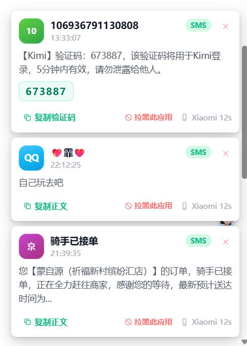
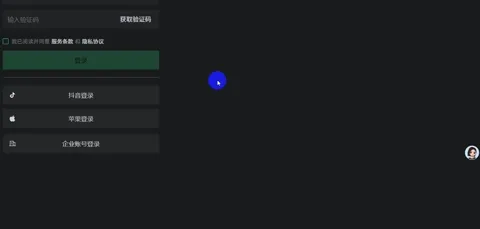

Catrace
Catrace
Catrace
Catrace
不是闹钟。你在忙它才计时，你歇了它闭嘴。Claude 要授权、GitHub 有动态、手机来短信，也从同一个角落冒出来。
不偷拍、不上传。键鼠只判忙闲，数据只留本机。
写代码、写文档、追剧，回过神来已经坐了半天。
终端盯 AI、浏览器刷 GitHub、手机震动——注意力被撕成碎片。
固定时间响，不管你在开会还是已经歇着。
真正在忙才提醒；插件消息同一套 Toast，可点可跳过。

主界面：今天坐了多久、什么时候休息过，一眼看清
Catrace 不关心「你计划坐多久」，只关心「你实际坐了多久」。该知道的消息，也统一弹在右下角。
轻量、本地。坐太久会叫你；别的消息也走同一张卡。
不记录键入内容与点击位置，只判断忙闲。纯本地运行，隐私不离机。
连续工作太久就弹卡；可温柔卡片，也可全屏盖住屏幕逼你歇会儿。支持稍后 / 跳过。
每小时喝口水，或者每天下班前记得打卡。文案你自己写。
追剧、看电影时不会被误判为休息；到点仍会提醒起来活动一下。
右下角卡片可点、可操作；全屏覆盖游戏场景也尽量不抢焦点，点击可穿透空白区。
今天坐了多久、什么时候歇过，一眼能看出来。哪天坐太久，也可以翻以前的日子。
想用的打开，不想用的关掉。消息还是同一张卡。
Claude、Codex 跑到哪了、要你点允许，弹出来。不用死盯终端。
耳机一戴上，弹一下，或者直接帮你打开听歌软件。
有人提 issue、点 star，桌面上就会知道。
论坛有人回你、@你，电脑上也会弹一下。
验证码来了不用掏手机。安卓短信、App 通知可以转到电脑（要搭配 SmsForwarder）。
复制了张图，在桌面按一下粘贴，直接变成文件。
想自己写一个？ catrace-plugin
无论手机通知、耳机连接还是验证码，都收敛到右下角同一张卡片。


短信、App 通知、验证码……转发到电脑右下角，可一键复制或拉黑应用。
蓝牙耳机连接 / 断开时弹卡，可自动打开你指定的音乐播放器。
手机收到 Trae 等登录验证码，桌面同步弹窗，不用反复低头看手机。
「以前脖子酸了才想起动一动；现在 AI 进度和久坐提醒都在右下角，不用在终端和浏览器之间来回切。」
没有复杂设置，安装后就能用。
支持 Windows、macOS、Linux。安装后可开开机自启，后台静默跑。
写代码、写文档、回邮件、看视频……久坐与定时按你的节奏自动记、自动提醒。
在插件中心开关功能；从文件夹或 zip 安装扩展。消息仍统一弹在右下角。